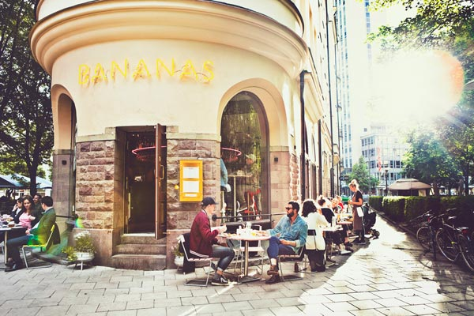
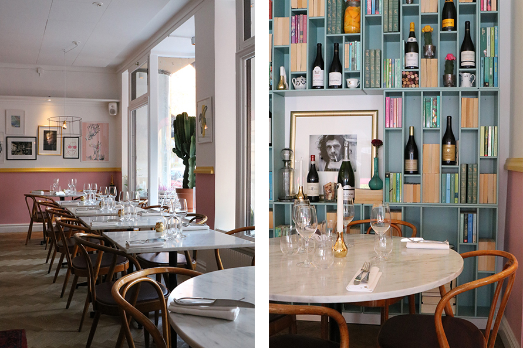
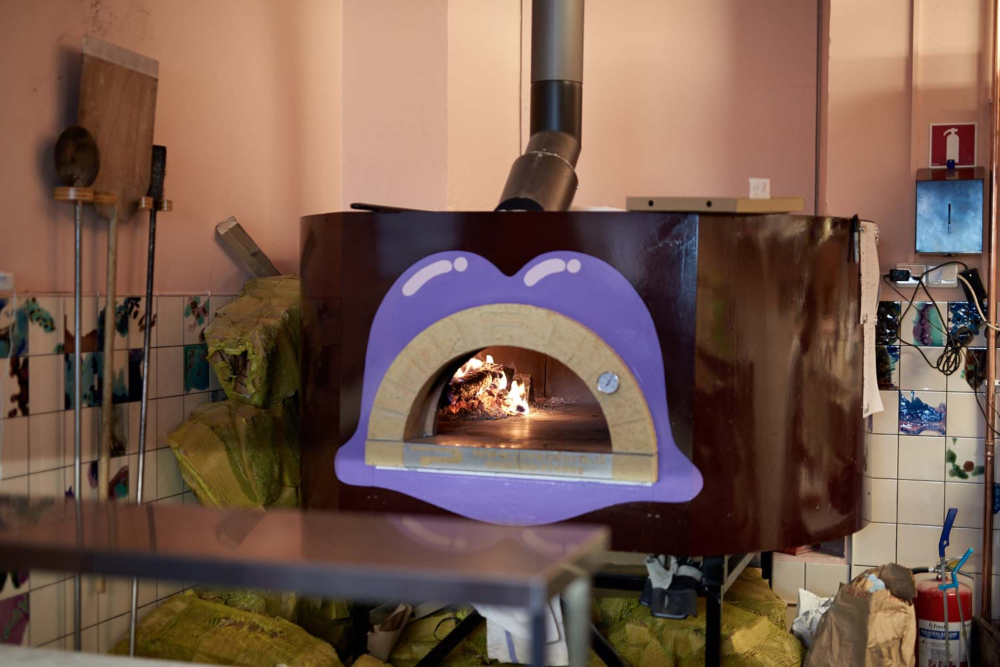
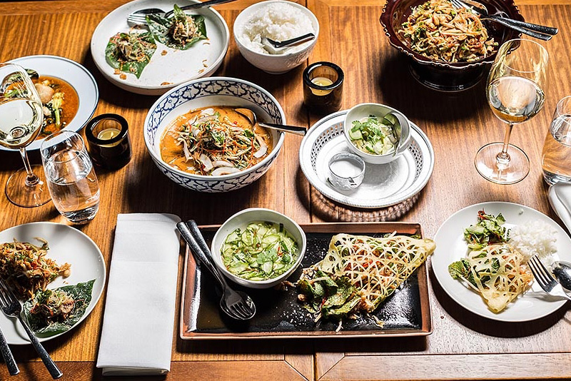
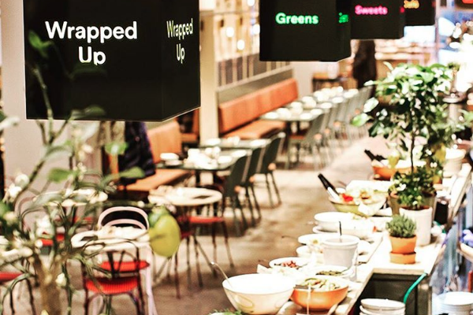
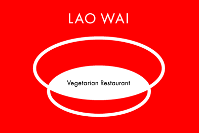
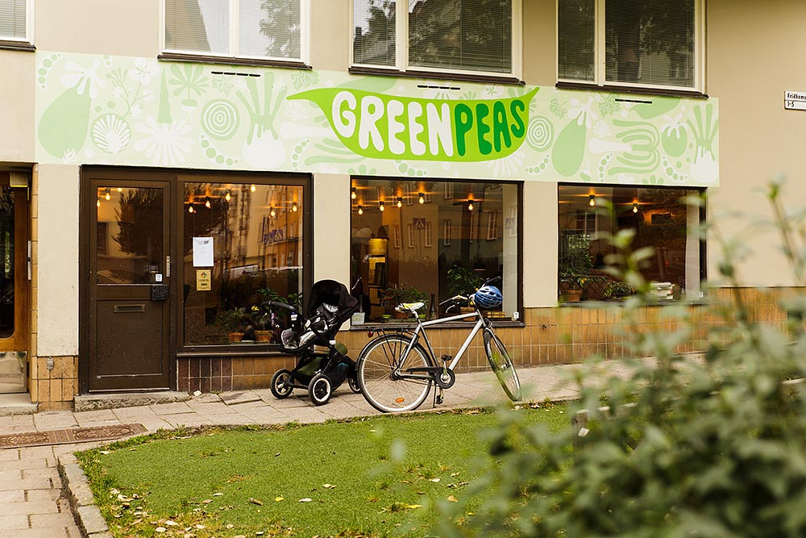
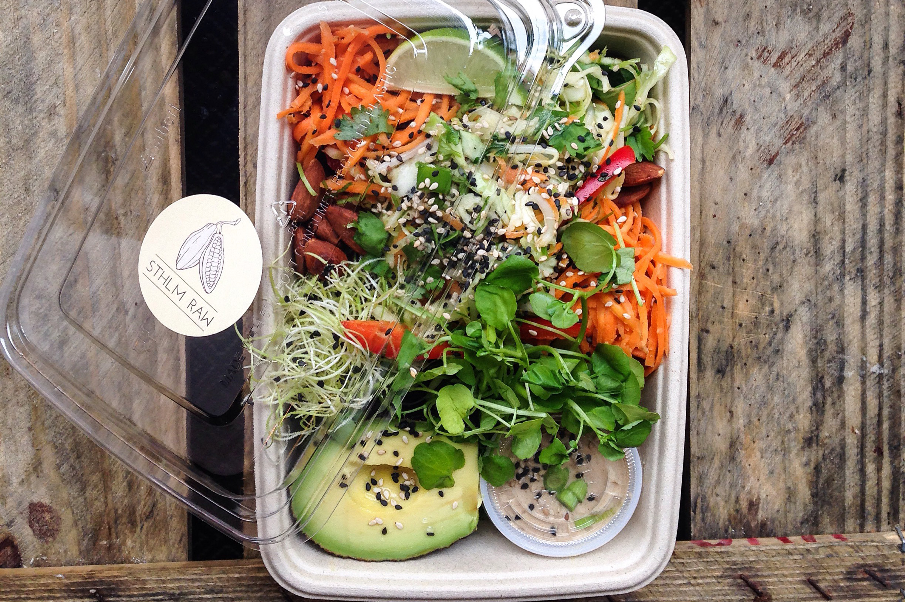

Bistro Bananas
Skånegatan 47, 116 37 Stockholm
No Reservations
Mon - Fri: 17 - 01, Sat - Sun: 12 - 01
Delicious trendy pizzas (and more!) served in a hip locale near Skanstull, wide selection of beer and wine - take-away option available!
Brasserie Godot

Grev Turegatan 36, 114 36
Phone: 08-660 06 14
Mon - Thu: 17.00 - 23.00, Fri - Sat: 17:00 - 01:00
A contemporary take on the classic french brasserie combined with modern cooking techniques - Seasonal dishes à la carte and a full vegan menu!
Le Nom
Roslagsgatan 6, 113 32
Phone: 08-10 01 53
Mon - Fri: 17:00 - Late
Le Nom is a completely non-classic restaurant with an innovative way of serving meals. All menu items come as a "middle dish", diners are free to compose their meals however they want.
The Plant

Götgatan 132, 118 62 Stockholm
08 21 51 52
Mon - Thurs 11:00 - 21:00, Fri - Sat 11:00 - 22:00, Sun 11:00 - 20:00
The Plant is a vegan and organic fast-food restaurant that offers great, fresh and healthy food. The focus lies on a lot of flavor, delicious appearance and hearty dishes
Omnipollos Hatt
Hökens Gata 1A, 116 46
No Reservations
Mon - Sun: 12 - 01
Cozy sidestreet wall in the hole serving experimental pizzas - Omnipollo beer on tap!
Farang
Tulegatan 7, 113 53
Phone: 08-673 74 00
Lunch: Tue - Fri: 11.30 - 13.30, Dinner: Tue - Thu: 17.00 – 24.00 Fri - Sat: 17.00 - 01.00
World Class Asian fusion fine dining - make sure to book a table in advance, well worth the wait. Vegan tasting menu available!
Gro

Sankt Eriksgatan 67, 113 32
Phone: 08-643 42 22
Tues - Fri: 17:30 - 23:00
Gro is a modern and conceptual restaurant with a deep focus on seasonal produce, sourced locally and passion for food. Innovative combinations and complex simplicity are the major themes. Small interior so make sure to book a table!
Vigårda

Kungsgatan 25 and Norrlandsgatan 13 Mood galery Stockholm
08-505 244 85
Mon - Tue: 11:00 - 21:00, Wed - Sat: 11:00 - 23:00, Sun: 11:00 - 19:00
Delicious burgers served with homebaked bread, vegetables and a selction of dip sauce and affordable drinks
/Mother
Mäster Samuelsgatan 19, 111 44 Stockholm
08-505 244 39
Mon – Fri 07.30 – 01.00, Sat 11.30 – 01.00, Sun 11.30 – 16.00
Health-oriented Mother boasts a dedication to well-being and innovation, where guests order and pay via a tablet. The cuisine fuses international influences with emphasis on vegetarian options, all dishes can be ordered as halves so guests can combine flavours as they see fit.
Reggev Hummus

Ringvägen 145, Stockholm
08-640 58 01
Mon - Fri 10:00 - 21:00, Sat 12:00 - 18:00
Reggev hummus is a genuine hummus place that serve fresh hummus dishes for vegans and vegetarians. They have about 17 different hummus dishes and also some other dishes like Shakshuka and Sabich.
Kokyo

Sveavägen 105, Stockholm
08-320073
Mon – Tue 11:30 – 14:00 / 17:00 – 21:00, Fri 11:30 – 14:00 / 17:00 – 23:00, Sat 17:00 – 23:00, Sun 17:00 – 21:00
Kokyo is a family restaurant that offer an extensive vegetarian menu consisting of dishes prepared with their own made tofu. They also have the dumplings and gyoza as our specialty.
Lao Wai
Luntmakargatan 74, 113 51 Stockholm
08-673 78 00
Mon - Fri 11.00 - 14.00 / 17.30 - 22.00
Amazing Chinese homestyle vegan dishes made with the best ingredients and without substandard compensation.
Hos

Hornsgatan 151, Stockholm
08 84 44 20
Mon – Fri: 17.00 - 23.00, Sat - Sun: 12:30 - 23:00
Experience the truly authentic Chinese food with inspiration from the Cantonese cuisine, Sichuan and Shanghai. Hos won the prize for the best Chinese restaurant in Europe at Asian Curry Awards 2014.
Steam

St Eriksgatan 118, Stockholm
08 500 899 49
Mon - thu 11:00 - 15:00, Fri 11:00 - 14:00
Great place for dumplings and noodle soup. Very fresh ingredients and take away options.
Chutney

Katarina Bangata 19, Stockholm
08-640 30 10
Weekdays: 11.00 - 22.00, Weekend: 12.00 - 22.00
Opened in 1987, Chutney is one of the oldest Vegetarian restaurant in Stockholm. The food is inspired from the Middle East and Asiamix of India, Persia, Thailand
Légumes

Hornsgatan 80, Stockholm
08-669 35 35
Mon - Sat 10:00 — 21:00, Sun: 10:00 - 20:00
Légumes offers a large, vegetarian buffet inspired from the Mediterranean cuisine at an affordable price.
Green Peas
Fridhemsgatan 3, Stockholm
08-651 88 00
Mon - Tue 11:00 - 15:00, Wed - Sat 11:00 - 21:00, Sun 11:00 - 16:00
Yummy Multi-Ethnic Organic Kitchen. A concept of plant-based, sustainable food prepared with organic ingredients with inspiration from all corners of the world.
Sthlm raw
Långholmsgatan 11, Stockholm
08-120 573 05
Tue – Fri 10:00 - 19:00, Sat 11:00 – 16:00
Only organic and raw food here. No GDS, no gluten, no dairy, and no sugar.